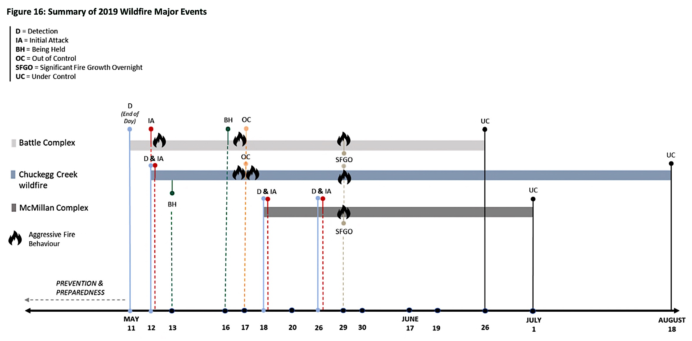
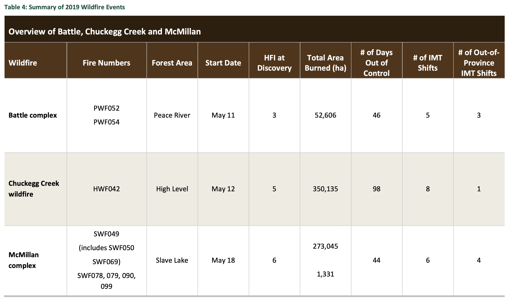
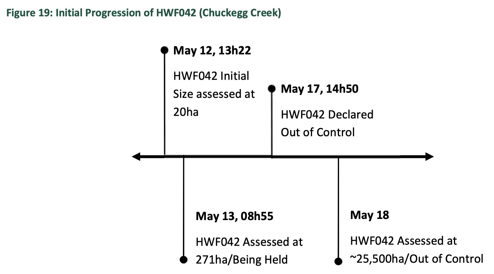

All content below came from, and is paraphrased from:
In general, early season (e.g., May), Alberta wildfires can be expected to be very fast moving whenever pushed by winds. Even under moderate winds , the wildfires can be active. One reason is because of the large amount of dry fine fuel (dead grasses and other vegetation from the previous summer) available in May, before deciduous plants and grasses green up in later spring and summer.
For 2019, the extreme hazard conditions in northern Alberta were well understood by WMB {Alberta Wildfire Management Branch} staff going into the month of May. These extreme weather conditions came to a head in the northwest section of the province, during the weekend of May 11 and 12, 2019.
Figure 16, below, depicts the timeline for the three major wildfire incidents in Alberta during 2019. An overview of the three major wildfire incidents is presented in Table 4.


[ Weather-related issues are highlighted in red font, in the breifing below. ]
HWF042, known later as the Chuckegg Creek wildfire, was detected by a lookout at 13h22 and assessed to be 20 hectares in size (Figure 19). Although it was detected on May 12, this fire was likely started at 18h08 the previous evening following a lightning strike. The fire persisted overnight and grew during the daytime heating the next day.
The Initial Attack (IA) was immediate upon detection and included two Helitack (HAC) crews (an initial attack crew specially trained in the tactical and logistical use of helicopters for wildfire suppression; see https://en.wikipedia.org/wiki/Helitack) and one Firetack (FTAC) crew along with wildfire officers, heavy equipment and helicopter support. Airtankers were requested but were delayed because of other wildfire priorities. The first airtanker arrived at 15h15, three hours and 43 minutes after detection.
HWF042 grew overnight to an estimated 271 hectares and was declared Being Held (BH) at 08h55 on May 13. For the next four days of HWF042, under modest winds and because of suppression efforts, the wildfire burned within the recognized perimeter and did not grow significantly.
Categorizing the wildfire as Being Held (BH) on the morning of May 13 may have been premature and potentially created a false sense of security around the wildfire status for many stakeholders.
[ BH is defined by WMB Standard Operating Procedures as follows: “a wildfire that is identified as “being held” is when sufficient resources are currently committed and sufficient action has been taken, such that the wildfire is not likely to spread beyond existent or predetermined boundaries under prevailing and forecasted weather and fire behaviour conditions.” This definition, while consistent with other wildland fire agencies in Canada, has many sub-components that not only have a variety of potential operational impacts, but can also be misinterpreted by public stakeholders.]

Late afternoon on May 17, high winds caused HWF042 to escape. These winds were forecasted prior to the escape, but the tactics employed were not sufficient to secure containment, given the sudden and dramatic change in wind condition.
HWF042 was declared Out of Control (OC) at 14h50 of May 17. It spread rapidly, growing to 1,800 hectares by 21h00. By 21h00 the following day, it had reached a size of over 25,000 hectares.
By May 18, extremely dry conditions were well established in northern Alberta. New and existing wildfires were challenging suppression resources – particularly whenever the winds picked up. The existing Battle complex and Chuckegg Creek wildfire grew considerably on May 17 and were burning OC.
The forecast for May 18 included a Red Flag Watch for the Red Earth weather zone, with forecasted southeast winds of 25 kilometres / hour gusting to 45 kilometres / hour. With WMB already challenged by the wildfires in High Level and Peace River, resources became further stretched with the ignition of new wildfires northeast of Slave Lake. This ultimately became the McMillan complex.
[ Note: Red flag watches and warnings are issued when forecasts indicate that a combination of high temperatures, very low humidity and strong winds in a given location could create an environment that is conducive to dangerous fires. It is intended to provide situational awareness messaging for wildfire personnel and the public that a hazardous fire environment is developing, and to reinforce the need for heightened vigilance.]
At approximately 14h00 on May 18, grass was ignited in several places along the north side of Highway 754 that runs between Marten Beach and Wabasca (SWF050). Other members of the public who were travelling the same highway quickly spotted the wildfires and these fires were reported via the 310-FIRE reporting line by 14h14. The Head Fire Intensity (HFI) forecast for the area was 6 at the time of detection. Teepee Lake wildfire lookout confirmed the location and staff traveling to SWF048 (a power line-caused wildfire reported an hour earlier) reported “two good columns” — suggesting the wildfires were getting a good push from the steady winds in extremely dry conditions. These became the McMillan fire, which is important because it was competing for fire-fighting resources that could have been used at the Chuckegg Creek High Level fire.
IA resources were dispatched from Wabasca and air attack was requested and dispatched from Fort McMurray to respond to SWF049 and SWF050. The CL215T airtanker group positioned in Slave Lake for the day, like other groups across the province, was working other wildfires when SWF049 and SWF050 were reported. Ground crews, air attack and heavy equipment were well coordinated in the first 36 hours.
A decision was made to focus on SWF050 because it was determined to be more likely to hold — this determination was valid. With heavy equipment supported by ground crews and helicopter buckets, SWF050 was held over the following two days growing to 1,540 hectares (its final size) by the end of day on May 19 and declared BH on May 27. SWF049 was much more challenging; by the end of day on May 18, SWF049 was estimated to be 1,000 hectares in size. Ground forces were working at the rear while airtankers and helicopters tried to hold the wildfire against McMillan Lake. On May 19, when winds continued to push the wildfire, SWF049 spread around McMillan Lake and grew to 5,300 hectares by the end of the day, setting the stage for the large complex that would persist for several weeks. In the case of SWF049, appropriate WMB Operations Section staff were assigned and provided continuity as an IMT arrived days later. All of these activities took resources that could have been used to fight the High Level fire.
On May 17, 2019 the Chuckegg Creek wildfire (HWF042) was declared Out of Control (OC) and an Incident Management Team (IMT) assumed command May 20. A total of eight IMT’s were deployed in successive tours on Chuckegg Creek, with a total of 5,333 personnel deployed to action the wildfire to bring it under control. This wildfire was extremely active throughout the month of May and into June, presenting significant challenges for wildfire and emergency response organizations.
There were, however, two extreme periods of fire behaviour that stand out. The first occurred between May 17 and 20, when the wildfire grew and took a 25-kilometre run, growing from approximately 2,300 hectares to over 71,400 hectares. Evacuation Orders were issued by Mackenzie County, the Town of High Level and the Dene Tha’ First Nation, displacing over 3,000 residents from their homes. These evacuations triggered the establishment of Unified Command for the Chuckegg Creek incident, which was enacted on May 21 with an Incident Command Post (ICP) in the Town of High Level. This first period of Unified Command was terminated on May 29. The timing of this termination proved extremely challenging due to aggressive fire behaviour that same day.
The initial set-up of Unified Command came with challenges as partners formed relationships and familiarized themselves with Unified Command protocol. Municipalities, admittedly, “possessed limited Incident Command System (ICS) knowledge and experience”, particularly in the context of ICS protocol, which impacted efficiency when setting priorities and making decisions. However, the first execution of Unified Command was reported to be effective and well-received. A clear example of the effectiveness of Unified Command was illustrated during the 6,000 hectares burn out operation that was conducted on the northern flank of the wildfire.
This exemplified the product of all jurisdictions working together and was instrumental in protecting the Town of High Level. The residents evacuated from Chuckegg Creek in May — Mackenzie County, the Town of High Level, Dene Tha’ First Nation, Keg River and Carcajou areas — returned to their communities between June 2 and 5 following weeks of evacuation.
The second major run occurred on May 29, when Chuckegg Creek ran 30 kilometres overnight. The wildfire conditions were extreme — wildfire growth of this extent overnight is very uncommon. One area that presented a significant challenge to firefighters was a horseshoeshaped area immediately adjacent the Peace River. This was an area of approximately 80,000 to 90,000 hectares in size of contiguous fuel, without any access points and little available water except the river itself.
Different strategies were deployed to deal with this situation, but ultimately the emphasis on aerial ignition proved to be the most successful given the options available. This technique raised many concerns with local stakeholders given the increased risk and smoke concerns associated with aerial ignition, but was ultimately implemented with some success. Despite the firefighting efforts, the wildfire spread beyond control lines before the horseshoe area could be adequately addressed.
Unified Command was established again between Mackenzie County and WMB on June 18. Rapid wildfire growth forced additional communities to evacuate between June 17 and 19, including the Hamlet of La Crete, Beaver First Nation and the community of Blue Hills. These were the last evacuations of the 2019 major incidents.
Chuckegg Creek wildfire, however, continued to burn OC until it was held on July 25 and eventually declared Under Control (UC) on August 18 — 98 days after detection. Chuckegg Creek burned a total area of 350,135 hectares with structures lost on the Paddle Prairie Métis Settlement and Mackenzie County in the area around Thompkins Landing/Blue Hills.